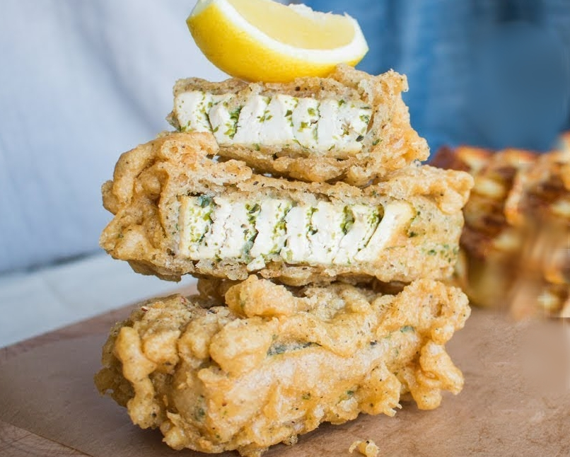

First saw this from The Easy Vegan
Slice the tofu into flatter squares, whatever size you want the final fillet to end up. I do this by cutting the tofu block length-wise. Then slice each fillet into as many thin strips as you can, taking care not to rip it up. Smoked tofu works the best for this because its the most rubbery and firm.
Sprinkle the nori over the slices getting it on all sides, then push the slices back into the shape of the fillet with two toothpicks pushed through to hold it together.
Make the batter by mixing the dry ingredients and water to the right consistency. You want it thin enough that you can coat the fillet but without it getting watery.
Heat up the oil in as small of a pan as you can to get the most heigh out of the oil. I use a medium saucepan with high sides.
Lightly coat the fillets in dry flour (use an extra bowl for this) and then fully dunk it into the batter before going straight into the hot oil.
Fry and flip to your heart's contentment.
Even if you dont have the nori, this still comes out super nice. But! Make sure to thinly slice it into the layers, it makes the post-fry consistency so much nicer.